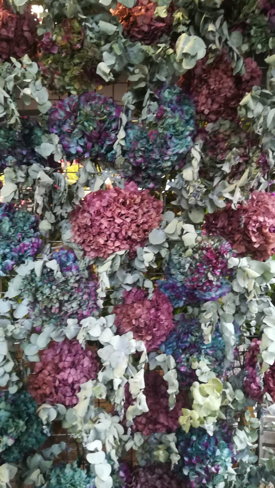
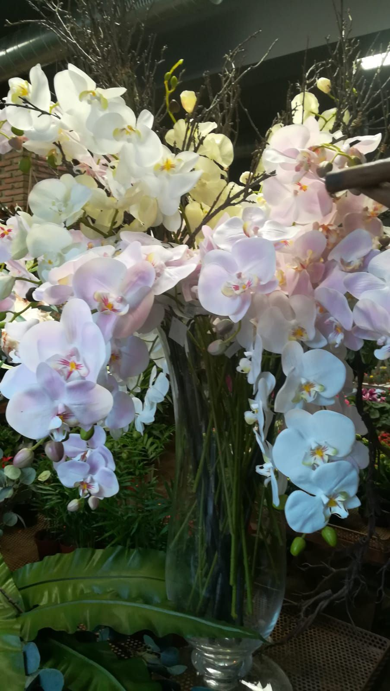
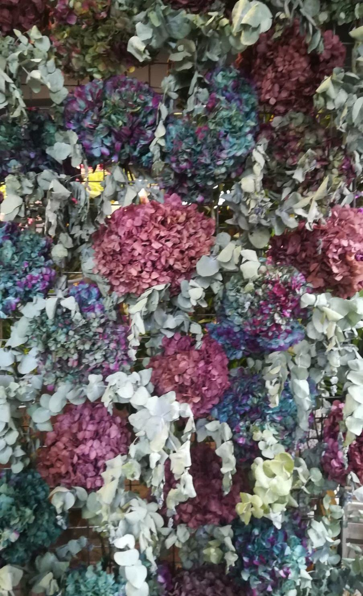
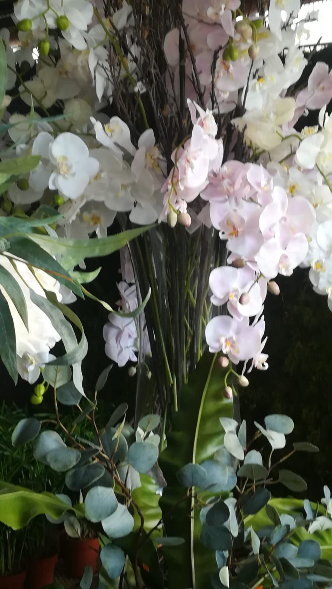
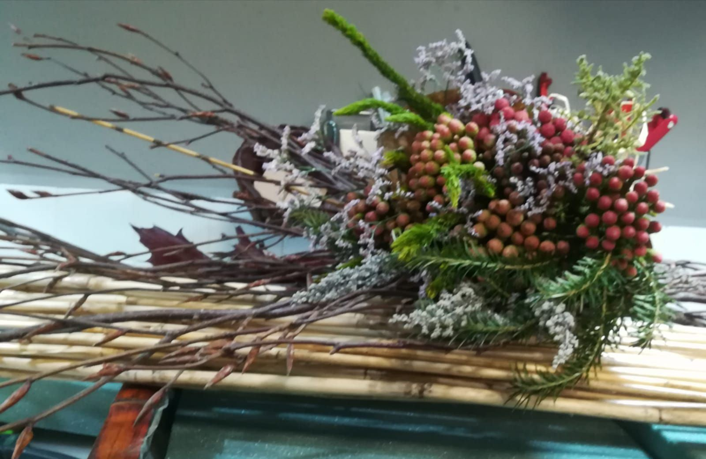

Flores preservadas
Flor natural tratada para que conserve su aspecto durante meses sin agua. Un regalo que dura y no necesita cuidados.
Ramos desde 60 €
Encargar un ramoPara quien quiere flores en casa todo el año, sin tener que cambiarlas.
La flor preservada es flor natural tratada para que conserve su color y su forma durante meses. Las flores de tela imitan a la flor natural y quedan bien en sitios sin luz o donde no se puede regar, como comercios u oficinas.

Flor natural tratada para que conserve su aspecto durante meses sin agua. Un regalo que dura y no necesita cuidados.
Ramos desde 60 €
Encargar un ramo
Flores de tela y composiciones de flor y planta artificial para espacios sin luz, comercios o lugares donde no se puedan regar.
Flores de tela desde 6 €
Pedir informaciónPulsa en una foto para verla en grande. Tenemos más variedad en la calle Osario.



Mándanos una foto o cuéntanos para qué espacio lo quieres y te aconsejamos.